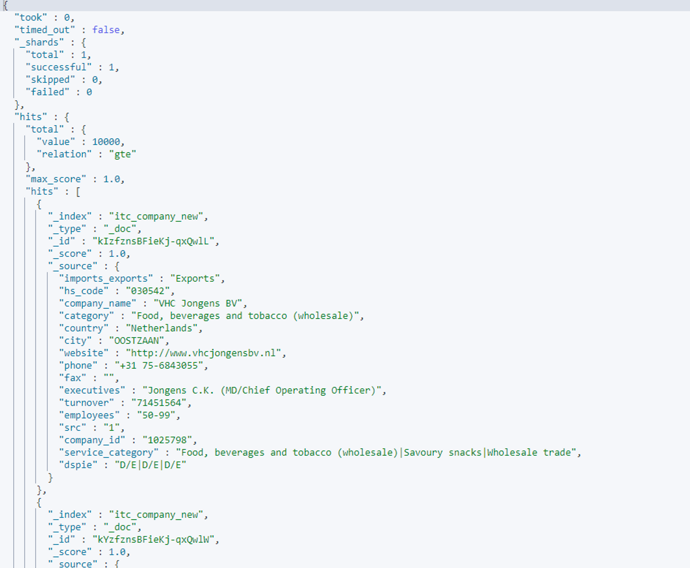

本機ELK安裝
本機端需要安裝docker
安裝elk
git clone https://github.com/deviantony/docker-elk
進入docker-elk 執行docker
docker-compose up -d
本機端9200 port 進入elasticsearch (預設帳號 : elastic 預設帳號 : changeme)
logstash 執行資料匯入
sudo /usr/share/logstash/bin/logstash -f /isb_data/global_trade.conf
logstash conf 檔案範例
input {
file{
path => "/usr/share/logstash/pipeline/global_trade_global_20220725.csv"
start_position => "beginning"
sincedb_path => "/dev/null"
}
}
## Add your filters / logstash plugins configuration here
filter {
csv {
separator => ","
columns => ['source', 'Date', 'supplier', 'supplier address', 'Supplier Contact',
'Buyers', 'Buyer address', 'Buyers Contacts', 'HS Code',
'product description', 'trademark', 'unit price', 'unit price fob','Amout','Amount fob', 'Quantity',
'Quantity Unit', 'weight', 'unit weight', 'Export Country', 'FOB port',
'import Country', 'Destination', 'Mode of transport','import and export','other']
}
mutate { remove_field => [ "host","path","message" ] }
}
output {
elasticsearch {
hosts => "localhost:9200"
index => "global_trade_logstash"
user => "elastic"
password => "changeme"
}
stdout {}
}
在本機端5601 port，Kibana頁面左上功能點選後，選擇下方的Dev Tools可輸入指令查詢Elasticsearch
elasticsearch 資料回傳的格式
